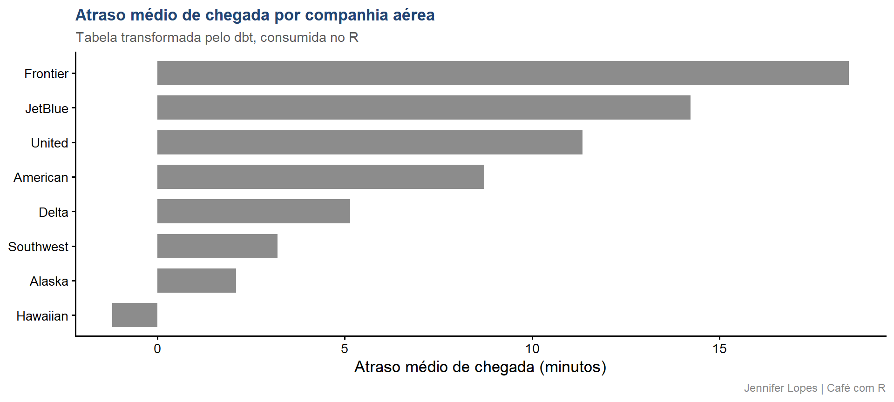

Aula 32. dbt com R
SQL versionado e testado no pipeline de dados com reticulate e PostgreSQL
Democratização
Esta aula foi construída para que você entenda como integrar o dbt ao seu projeto R, transformar dados no PostgreSQL com SQL versionado e testado, e consumir os resultados diretamente no R para análise. O
reticulateé a ponte que torna tudo isso possível sem sair do RStudio.

Essa é a Meguy mascote do Café com R.
Acompanhe o Café com R
SITE OFICIAL> https://jenniferlopes.github.io/meu_site/
Objetivos da aula
- Compreender o que é o dbt e qual problema ele resolve
- Configurar o ambiente Python com reticulate dentro do projeto R
- Instalar o dbt Core e o adaptador dbt-postgres via R
- Criar e configurar um projeto dbt com conexão ao PostgreSQL
- Escrever models SQL com materializações e dependências
- Aplicar testes automáticos sobre os dados transformados
- Ler os resultados no R e visualizar com ggplot2
Bloco 1
O que é o dbt e por que ele existe
O problema que o dbt resolve
Em times de dados, é comum encontrar a seguinte situação:
- Dezenas de scripts SQL espalhados em pastas locais, sem organização
- Nenhum controle de versão sobre as transformações
- Nenhum teste para verificar se os dados transformados estão corretos
- Documentação inexistente ou desatualizada
- Dependências entre queries gerenciadas manualmente, na memória de quem escreveu
Quando um analista sai da equipe ou quando uma query muda, ninguém sabe o impacto. Resultados divergem. Dashboards quebram. Decisões são tomadas com dados inconsistentes.
O que é o dbt
dbt (data build tool) é uma ferramenta de código aberto que permite transformar dados diretamente no banco de dados usando SQL, aplicando as mesmas práticas de engenharia de software usadas no desenvolvimento de aplicações:
- Controle de versão: cada transformação é um arquivo
.sqlversionado no Git - Modularidade: transformações se referenciam umas às outras com
ref() - Testes automáticos: validações sobre unicidade, nulos e integridade referencial
- Documentação gerada automaticamente a partir dos arquivos
.yml - Linhagem dos dados: DAG visual mostrando as dependências entre transformações
O dbt não extrai dados, não carrega dados e não substitui o R na análise. Ele cuida exclusivamente da camada de transformação dentro do banco.
O modelo ELT e onde o dbt se encaixa
O dbt foi construído para o modelo ELT (Extract, Load, Transform):
Fonte de dados
|
| Extract + Load (feito por ferramentas como Airbyte, Fivetran ou R)
v
Banco de dados / Data Warehouse (PostgreSQL, BigQuery, Snowflake)
|
| Transform (feito pelo dbt: SQL versionado e testado)
v
Tabelas analíticas prontas para consumo
|
| Analyze (feito pelo R, Python ou ferramentas de BI)
v
Relatórios, modelos estatísticos, dashboardsNo contexto desta aula: o R exporta os dados brutos para o PostgreSQL, o dbt transforma, e o R consome o resultado final para análise.
dbt Core e dbt Cloud
| Característica | dbt Core | dbt Cloud |
|---|---|---|
| Custo | Gratuito e open source | Plano pago (free tier limitado) |
| Interface | Linha de comando (CLI) | Interface web completa |
| Orquestração | Manual ou via Airflow/GitHub Actions | Nativa com agendamento |
| Ambiente | Local ou servidor próprio | Gerenciado pela dbt Labs |
| Documentação | dbt docs serve local |
Hospedada na plataforma |
Nesta aula usamos o dbt Core, instalado via pip e operado pela linha de comando, acessível diretamente do R via reticulate e system().
dbt e targets: quando usar cada um
| Dimensão | dbt | targets |
|---|---|---|
| Linguagem de transformação | SQL com Jinja | R com funções R |
| Onde executa | Dentro do banco de dados | Na memória do R |
| Volume de dados | Escala para bilhões de linhas | Limitado pela RAM do R |
| Colaboração | Times com analistas SQL | Times R |
| Versionamento | Git com arquivos .sql |
Git com arquivos .R |
| Testes | Nativos no dbt | Pacote testthat |
Não são concorrentes. Em pipelines maduros, o dbt transforma no banco e o targets orquestra a análise em R. Os dois podem coexistir no mesmo projeto.
Bloco 2
Configurando o Ambiente com reticulate
O que é o reticulate
reticulate é o pacote R que cria uma interface bidirecional entre R e Python. Ele permite:
- Instalar e gerenciar ambientes virtuais Python a partir do R
- Executar código Python dentro de um script R com
py_run_string() - Importar módulos Python com
import() - Transferir objetos entre R e Python durante a mesma sessão
No contexto desta aula, o reticulate é usado para:
- Criar um ambiente virtual Python isolado dentro do projeto R
- Instalar o dbt Core e o adaptador dbt-postgres nesse ambiente
- Verificar se a instalação está correta
Por que usar reticulate em vez do terminal
Usar o reticulate para configurar o ambiente Python oferece três vantagens para usuários de R:
1. Reprodutibilidade: o ambiente Python é criado e configurado dentro do próprio projeto R, com o mesmo código que você versiona no Git. Qualquer colaborador reproduz o ambiente com um único script.
2. Isolamento: o reticulate cria um ambiente virtual específico para o projeto, evitando conflitos com outras instalações Python do sistema.
3. Integração: após configurado, o dbt é invocado de dentro do R com system() ou reticulate::py_run_string(), sem sair do RStudio.
Instalação do reticulate
Verificando se Python está disponível
Output: configuração do Python
[1] FALSEpy_available() retorna TRUE se o Python estiver acessível. Se retornar FALSE, o reticulate pode instalar uma versão gerenciada do Python automaticamente com install_python().
Instalando Python gerenciado pelo reticulate
# Instalar uma versão específica do Python gerenciada pelo reticulate
# Isso é opcional se o Python já estiver instalado no sistema
install_python(version = "3.11")
# Verificar versões disponíveis
py_versions_windows() # Windows
# No macOS e Linux, usar python3 --version no terminal integrado do RStudioTip
O reticulate instala o Python em uma pasta gerenciada por ele (~/.pyenv no macOS/Linux), separada da instalação do sistema. Isso evita conflitos com o Python global.
Criando o ambiente virtual Python
# Criar um ambiente virtual Python específico para este projeto
# O nome "dbt-env" é uma convenção — pode ser qualquer nome
virtualenv_create(
envname = "dbt-env",
python = "3.11")
# Ativar o ambiente virtual na sessão R atual
use_virtualenv("dbt-env", required = TRUE)
# Verificar qual Python está ativo
py_config()Output: ambiente virtual ativo
python: C:/Users/User/AppData/Local/uv/cache/archive-v0/wK-eS4J9ogvOj3gQ/Scripts/python.exe
libpython: C:/Users/User/AppData/Roaming/uv/python/cpython-3.12.13-windows-x86_64-none/python312.dll
pythonhome: C:/Users/User/AppData/Local/uv/cache/archive-v0/wK-eS4J9ogvOj3gQ
virtualenv: C:/Users/User/AppData/Local/uv/cache/archive-v0/wK-eS4J9ogvOj3gQ/Scripts/activate_this.py
version: 3.12.13 (main, Aug 7 2026, 02:26:41) [MSC v.1944 64 bit (AMD64)]
Architecture: 64bit
numpy: C:/Users/User/AppData/Local/uv/cache/archive-v0/wK-eS4J9ogvOj3gQ/Lib/site-packages/numpy
numpy_version: 2.5.2
NOTE: Python version was forced by py_require()O campo python indica qual executável Python está sendo usado. O campo virtualenv confirma que um ambiente virtual está ativo. Todos os pacotes instalados a partir daqui vão para esse ambiente isolado.
O que é um ambiente virtual Python
Um ambiente virtual é um diretório isolado que contém uma instalação independente do Python e seus pacotes.
Por que isso importa:
Sem ambiente virtual, todos os projetos compartilham a mesma instalação Python global. Uma atualização do dbt-core em um projeto pode quebrar outro que depende de uma versão anterior.
Com ambiente virtual, cada projeto tem suas próprias versões de cada pacote, completamente isoladas.
Tip
O ambiente virtual Python é equivalente ao que o renv faz para pacotes R: cada projeto tem sua biblioteca isolada.
Instalando o dbt Core e o adaptador PostgreSQL
Important
dbt-core e dbt-postgres são pacotes Python instalados via pip. O adaptador dbt-postgres instala automaticamente as dependências necessárias para comunicação com o PostgreSQL, incluindo o psycopg2.
Verificando a instalação do dbt
Output: versão do dbt instalada
Core:
- installed: 1.8.x
- latest: 1.8.x - Up to date!
Plugins:
- postgres: 1.8.x - Up to date!A saída confirma a versão do dbt-core e do adaptador dbt-postgres. O campo Plugins lista os adaptadores instalados: apenas postgres aparece porque é o único que instalamos.
Configurando o PATH para o dbt
Em alguns sistemas, o executável dbt não está automaticamente no PATH após a instalação em ambiente virtual. Para garantir que o system("dbt ...") funcione:
Bloco 3
Configurando o Projeto dbt
Inicializando o projeto dbt
# Criar o projeto dbt dentro do projeto R
system("dbt init voos_analytics")
# Estrutura criada:
# voos_analytics/
# ├── dbt_project.yml # configuração principal do projeto
# ├── models/ # modelos SQL de transformação
# │ └── example/ # modelos de exemplo (pode remover)
# ├── seeds/ # CSVs pequenos para carregar no banco
# ├── tests/ # testes customizados
# ├── macros/ # funções Jinja reutilizáveis
# ├── snapshots/ # capturas históricas de tabelas
# └── analyses/ # queries ad hoc (não materializadas)O arquivo dbt_project.yml
O dbt_project.yml é o arquivo de configuração principal do projeto. Ele define:
O arquivo profiles.yml
O profiles.yml armazena as configurações de conexão com o banco. Ele fica fora do projeto dbt, em ~/.dbt/profiles.yml, para não ser versionado junto com o código.
voos_analytics:
target: dev
outputs:
dev:
type: postgres
host: "{{ env_var('PG_HOST', 'localhost') }}"
port: "{{ env_var('PG_PORT', '5432') | int }}"
dbname: "{{ env_var('PG_DBNAME') }}"
user: "{{ env_var('PG_USER') }}"
password: "{{ env_var('PG_PASSWORD') }}"
schema: dbt_dev
threads: 4A notação env_var() é uma macro Jinja do dbt que lê variáveis de ambiente. As credenciais nunca ficam no arquivo: ficam no .Renviron.
Credenciais seguras com .Renviron
# Abrir o .Renviron para edição
usethis::edit_r_environ()
# Adicionar as variáveis de ambiente no .Renviron:
# PG_HOST=localhost
# PG_PORT=5432
# PG_DBNAME=voos_db
# PG_USER=postgres
# PG_PASSWORD=sua_senha_segura
# Após salvar o .Renviron, reiniciar o R:
# CTRL + SHIFT + F10 (Windows/Linux)
# CMD + SHIFT + F10 (macOS)
# Verificar que as variáveis foram carregadas
Sys.getenv("PG_DBNAME")Important
O .Renviron deve estar listado no .gitignore. Nunca versione credenciais no Git. O dbt lê as variáveis de ambiente automaticamente via env_var() no profiles.yml.
Criando o arquivo profiles.yml a partir do R
profiles_dir <- path.expand("~/.dbt")
dir.create(profiles_dir, showWarnings = FALSE)
profiles_content <- glue::glue('
voos_analytics:
target: dev
outputs:
dev:
type: postgres
host: "{Sys.getenv("PG_HOST", "localhost")}"
port: {Sys.getenv("PG_PORT", "5432")}
dbname: "{Sys.getenv("PG_DBNAME")}"
user: "{Sys.getenv("PG_USER")}"
password: "{Sys.getenv("PG_PASSWORD")}"
schema: dbt_dev
threads: 4
')
writeLines(profiles_content,
file.path(profiles_dir, "profiles.yml"))Testando a conexão com dbt debug
Bloco 4
Seeds: Carregando Dados com dbt
O que são seeds no dbt
Seeds são arquivos CSV pequenos que o dbt carrega diretamente no banco de dados com o comando dbt seed. Eles são versionados junto com o projeto e são ideais para tabelas de referência estáticas.
Quando usar seeds:
- Tabelas de referência que raramente mudam: países, categorias, mapeamentos
- Dados de teste para desenvolvimento local
- Dados pequenos que fazem sentido viver junto com o código
Quando não usar seeds:
- Tabelas grandes que mudam com frequência: use ferramentas de ingestão como Fivetran ou R
- Dados sensíveis: seeds são versionados no Git
Exportando dados do R para seeds
# Criar a pasta de seeds
dir.create("voos_analytics/seeds", showWarnings = FALSE, recursive = TRUE)
# Exportar as tabelas do nycflights13 como seeds
write_csv(nycflights13::flights,
"voos_analytics/seeds/raw_flights.csv")
write_csv(nycflights13::airlines,
"voos_analytics/seeds/raw_airlines.csv")
write_csv(nycflights13::airports,
"voos_analytics/seeds/raw_airports.csv")
# Verificar os arquivos criados
tibble(
arquivo = list.files("voos_analytics/seeds", full.names = TRUE),
tamanho = file.size(arquivo),
tamanho_mb = round(tamanho / 1e6, 2))Output: arquivos de seed criados
# A tibble: 3 × 3
arquivo linhas tamanho_mb
<chr> <int> <dbl>
1 seeds/raw_flights.csv 336776 28.4
2 seeds/raw_airlines.csv 16 0
3 seeds/raw_airports.csv 1458 0.1Carregando os seeds no PostgreSQL
Output: dbt seed com sucesso
Running with dbt=1.8.x
Found 0 models, 3 seeds, 0 tests
1 of 3 START seed file dbt_dev.raw_airlines ............. [RUN]
1 of 3 OK loaded seed file dbt_dev.raw_airlines ......... [INSERT 16 in 0.18s]
2 of 3 START seed file dbt_dev.raw_airports ............. [RUN]
2 of 3 OK loaded seed file dbt_dev.raw_airports ......... [INSERT 1458 in 0.31s]
3 of 3 START seed file dbt_dev.raw_flights .............. [RUN]
3 of 3 OK loaded seed file dbt_dev.raw_flights .......... [INSERT 336776 in 8.42s]
Finished running 3 seeds in 8.91s.
Done. PASS=3 WARN=0 ERROR=0 SKIP=0 TOTAL=3Bloco 5
Models SQL: Transformando os Dados
O que são models no dbt
Models são arquivos .sql que definem transformações sobre os dados brutos. Cada model produz uma tabela ou view no banco de dados.
Materializações disponíveis:
| Materialização | O que cria no banco | Quando usar |
|---|---|---|
view |
View SQL | Staging: transformações leves |
table |
Tabela física | Marts: resultados finais consultados com frequência |
incremental |
Tabela com append | Grandes volumes com dados novos diários |
ephemeral |
CTE inline, sem objeto no banco | Transformações intermediárias descartáveis |
Model de staging: stg_flights.sql
dir.create("voos_analytics/models/staging",
showWarnings = FALSE, recursive = TRUE)
stg_flights_sql <- '
-- models/staging/stg_flights.sql
{{ config(materialized = "view") }}
SELECT
CAST(year AS INTEGER) AS ano,
CAST(month AS INTEGER) AS mes,
CAST(day AS INTEGER) AS dia,
carrier AS codigo_companhia,
flight AS numero_voo,
origin AS aeroporto_origem,
dest AS aeroporto_destino,
CAST(arr_delay AS FLOAT) AS atraso_chegada_min,
CAST(dep_delay AS FLOAT) AS atraso_partida_min,
CAST(air_time AS FLOAT) AS tempo_voo_min,
CAST(distance AS INTEGER) AS distancia_milhas,
CONCAT(year, "-",
LPAD(CAST(month AS TEXT), 2, "0"), "-",
LPAD(CAST(day AS TEXT), 2, "0"))
AS data_voo,
CONCAT(carrier, CAST(flight AS TEXT))
AS flight_id
FROM {{ ref("raw_flights") }}
WHERE arr_delay IS NOT NULL
'
writeLines(stg_flights_sql,
"voos_analytics/models/staging/stg_flights.sql")Model de staging: stg_airlines.sql
O operador ref(): rastreamento de dependências
-- Ao escrever:
FROM {{ ref("stg_flights") }}
-- O dbt substitui por:
FROM dbt_dev.stg_flights
-- E registra automaticamente que este model
-- DEPENDE de stg_flightsPor que ref() é fundamental:
- O dbt constrói o DAG (Directed Acyclic Graph) de dependências a partir de todos os
ref()do projeto - Ele garante que
stg_flightsseja criado antes de qualquer model que o referencie - Se você renomear uma tabela, basta alterar o
ref()e o dbt propaga a mudança
Model analítico: fct_atrasos.sql
dir.create("voos_analytics/models/marts",
showWarnings = FALSE, recursive = TRUE)
fct_atrasos_sql <- '
-- models/marts/fct_atrasos.sql
{{ config(materialized = "table") }}
SELECT
a.nome_companhia,
f.mes,
f.aeroporto_origem,
COUNT(*) AS total_voos,
ROUND(AVG(f.atraso_chegada_min)::numeric, 2) AS atraso_medio_min,
ROUND(AVG(f.atraso_partida_min)::numeric, 2) AS atraso_partida_medio_min,
SUM(CASE WHEN f.atraso_chegada_min > 15
THEN 1 ELSE 0 END) AS voos_atrasados_graves,
ROUND(
100.0 * SUM(CASE WHEN f.atraso_chegada_min > 15
THEN 1 ELSE 0 END)
/ COUNT(*), 2) AS pct_atrasados_graves
FROM {{ ref("stg_flights") }} AS f
LEFT JOIN {{ ref("stg_airlines") }} AS a
ON f.codigo_companhia = a.codigo_companhia
GROUP BY
a.nome_companhia,
f.mes,
f.aeroporto_origem
'
writeLines(fct_atrasos_sql,
"voos_analytics/models/marts/fct_atrasos.sql")Executando os models com dbt run
Output: dbt run com sucesso
Running with dbt=1.8.x
Found 3 models, 3 seeds, 0 tests
Concurrency: 4 threads (target='dev')
1 of 3 START sql view model dbt_dev.stg_airlines ......... [RUN]
1 of 3 OK created sql view model dbt_dev.stg_airlines ..... [CREATE VIEW in 0.31s]
2 of 3 START sql view model dbt_dev.stg_flights .......... [RUN]
2 of 3 OK created sql view model dbt_dev.stg_flights ....... [CREATE VIEW in 0.28s]
3 of 3 START sql table model dbt_dev.fct_atrasos ......... [RUN]
3 of 3 OK created sql table model dbt_dev.fct_atrasos ...... [SELECT 612 in 4.12s]
Finished running 3 models in 4.71s.
Done. PASS=3 WARN=0 ERROR=0 SKIP=0 TOTAL=3Output: dbt run com erro
2 of 3 START sql view model dbt_dev.stg_flights .......... [RUN]
2 of 3 ERROR creating sql view model dbt_dev.stg_flights ... [ERROR in 0.18s]
Completed with 1 error and 0 warnings:
Database Error in model stg_flights (models/staging/stg_flights.sql)
column "arr_time" does not exist
LINE 33: WHERE arr_time IS NOT NULL
HINT: Perhaps you meant to reference the column "dep_time".
compiled Code at target/run/voos_analytics/models/staging/stg_flights.sqlO dbt indica o arquivo, a linha e a mensagem de erro do banco. O caminho target/run/ contém o SQL compilado, útil para depurar o que o dbt enviou ao banco.
Bloco 6
Testes e Documentação
O que são testes no dbt
Testes são validações automáticas que verificam se os dados transformados atendem às expectativas definidas. O dbt executa os testes com dbt test e reporta quais passaram e quais falharam.
Dois tipos de testes:
Testes genéricos: definidos no arquivo schema.yml com configurações YAML. São os mais comuns e cobrem a maioria dos casos.
Testes singulares: arquivos .sql na pasta tests/ que retornam linhas que violam uma condição. Se retornar zero linhas, o teste passa.
Os quatro testes genéricos do dbt
not_null: verifica que nenhum valor da coluna é nulo. Falha se existir qualquer NULL.
unique: verifica que todos os valores da coluna são únicos. Falha se existir duplicata.
accepted_values: verifica que todos os valores da coluna estão dentro de uma lista permitida. Falha se existir valor fora da lista.
relationships: verifica integridade referencial, que todos os valores de uma coluna existem em outra tabela. Equivalente a uma FOREIGN KEY.
Criando o schema.yml de staging
schema_staging <- '
version: 2
models:
- name: stg_flights
description: "Voos do aeroporto de Nova York em 2013, limpos e padronizados."
columns:
- name: flight_id
description: "Número do voo."
tests:
- not_null
- name: aeroporto_origem
description: "Código IATA do aeroporto de origem."
tests:
- not_null
- accepted_values:
values: ["EWR", "JFK", "LGA"]
- name: codigo_companhia
description: "Código IATA da companhia aérea."
tests:
- not_null
- relationships:
to: ref("stg_airlines")
field: codigo_companhia
- name: stg_airlines
description: "Companhias aéreas com nomes padronizados."
columns:
- name: codigo_companhia
description: "Código IATA da companhia."
tests:
- not_null
- unique
'
writeLines(schema_staging,
"voos_analytics/models/staging/schema.yml")Executando os testes
Output: dbt test com sucesso
Running with dbt=1.8.x
Found 3 models, 3 seeds, 5 tests
Concurrency: 4 threads (target='dev')
1 of 5 PASS not_null_stg_flights_flight_id ............... [PASS in 0.42s]
2 of 5 PASS not_null_stg_flights_aeroporto_origem ......... [PASS in 0.38s]
3 of 5 PASS accepted_values_aeroporto_origem .............. [PASS in 0.51s]
4 of 5 PASS relationships_stg_flights_codigo .............. [PASS in 0.67s]
5 of 5 PASS unique_stg_airlines_codigo_companhia .......... [PASS in 0.29s]
Done. PASS=5 WARN=0 ERROR=0 SKIP=0 TOTAL=5Output: dbt test com falha
3 of 5 FAIL 12 accepted_values_aeroporto_origem .......... [FAIL 12 in 0.51s]
Failure in test accepted_values_aeroporto_origem
Got 12 results, configured to fail if != 0
compiled Code at target/compiled/voos_analytics/models/
staging/schema.yml/accepted_values_stg_flights_...sqlO número 12 indica quantas linhas violaram a condição. O arquivo compilado em target/compiled/ contém o SQL do teste. Execute-o diretamente no banco para inspecionar os registros problemáticos.
Documentação automática
A documentação gerada inclui:
- Descrição de cada model e coluna (do
schema.yml) - DAG interativo mostrando todas as dependências entre models, seeds e sources
- SQL compilado de cada model
- Resultados dos testes
Bloco 7
Lendo os Resultados no R
Conectar ao PostgreSQL e ler a tabela do dbt
library(DBI)
library(RPostgres)
library(tidyverse)
con <- dbConnect(
drv = RPostgres::Postgres(),
host = Sys.getenv("PG_HOST"),
port = as.integer(Sys.getenv("PG_PORT")),
dbname = Sys.getenv("PG_DBNAME"),
user = Sys.getenv("PG_USER"),
password = Sys.getenv("PG_PASSWORD"))
# Ler a tabela fct_atrasos gerada pelo dbt
fct_atrasos <- tbl(con, dbplyr::in_schema("dbt_dev", "fct_atrasos")) |>
collect()
glimpse(fct_atrasos)Output: tabela fct_atrasos
# A tibble: 5 × 8
nome_companhia mes aeroporto_origem total_voos atraso_medio_min
<chr> <int> <chr> <int> <dbl>
1 American 1 JFK 1812 8.72
2 Delta 1 JFK 2242 5.14
3 United 1 EWR 2893 11.3
4 JetBlue 1 JFK 1244 14.2
5 Southwest 1 EWR 1598 3.21
# ℹ 3 more variables: atraso_partida_medio_min <dbl>,
# voos_atrasados_graves <int>, pct_atrasados_graves <dbl>Código: visualização a partir do dbt
fct_atrasos |>
group_by(nome_companhia) |>
summarise(
atraso_medio = mean(atraso_medio_min, na.rm = TRUE),
total_voos = sum(total_voos),
.groups = "drop") |>
filter(total_voos > 1000) |>
ggplot(aes(
x = reorder(nome_companhia, atraso_medio),
y = atraso_medio,
fill = atraso_medio > 0)) +
geom_col(width = 0.7, alpha = 0.9) +
coord_flip() +
scale_fill_manual(values = c(
"TRUE" = cores_cafe["marrom"],
"FALSE" = cores_cafe["azul_claro"])) +
labs(
title = "Atraso médio de chegada por companhia aérea",
subtitle = "Tabela transformada pelo dbt, consumida no R",
x = NULL,
y = "Atraso médio de chegada (minutos)",
caption = "Jennifer Lopes | Café com R") +
tema +
theme(legend.position = "none")Gráfico: atraso médio por companhia

O fluxo completo em um único script R
library(reticulate)
library(DBI)
library(RPostgres)
library(tidyverse)
library(nycflights13)
# 1. Configurar o ambiente Python
use_virtualenv("dbt-env", required = TRUE)
# 2. Exportar dados brutos para seeds
write_csv(flights, "voos_analytics/seeds/raw_flights.csv")
write_csv(airlines, "voos_analytics/seeds/raw_airlines.csv")
write_csv(airports, "voos_analytics/seeds/raw_airports.csv")
# 3. Executar o pipeline dbt completo
setwd("voos_analytics")
system("dbt seed")
system("dbt run")
system("dbt test")
# 4. Conectar ao PostgreSQL e ler os resultados
con <- dbConnect(
drv = RPostgres::Postgres(),
host = Sys.getenv("PG_HOST"),
port = as.integer(Sys.getenv("PG_PORT")),
dbname = Sys.getenv("PG_DBNAME"),
user = Sys.getenv("PG_USER"),
password = Sys.getenv("PG_PASSWORD"))
fct_atrasos <- tbl(con,
dbplyr::in_schema("dbt_dev", "fct_atrasos")) |>
collect()
# 5. Análise no R
fct_atrasos |>
group_by(nome_companhia) |>
summarise(atraso_medio = mean(atraso_medio_min)) |>
arrange(desc(atraso_medio))
dbDisconnect(con)Bloco 8
Boas Práticas e Mercado
Convenção de nomenclatura dos models
Adotar uma convenção consistente é fundamental para projetos com múltiplos colaboradores:
| Prefixo | Camada | O que contém |
|---|---|---|
stg_ |
Staging | Limpeza e padronização das fontes brutas. Um model por tabela de origem. |
int_ |
Intermediate | Transformações intermediárias complexas que não são consumidas diretamente. |
fct_ |
Fact | Tabelas de fatos: eventos mensuráveis (vendas, voos, transações). |
dim_ |
Dimension | Tabelas de dimensão: entidades (clientes, produtos, aeroportos). |
rpt_ |
Report | Tabelas finais específicas para relatórios ou dashboards. |
Versionamento do projeto dbt com Git
O projeto dbt inteiro, models, tests, seeds, macros e dbt_project.yml, deve ser versionado no Git junto com o projeto R.
O que versionar:
.gitignore recomendado para projetos dbt + R:
# dbt
voos_analytics/target/
voos_analytics/dbt_packages/
voos_analytics/logs/
# Credenciais
.Renviron
~/.dbt/profiles.ymlO que o dbt não faz
Important
É comum superestimar o escopo do dbt. Ele faz uma coisa bem: transformar dados já carregados no banco com SQL versionado e testado.
O dbt não faz:
- Extração de dados de fontes externas (APIs, arquivos, bancos de origem)
- Carregamento de dados no warehouse (isso é responsabilidade de ferramentas como Airbyte, Fivetran ou do próprio R)
- Orquestração de pipelines (para isso: Airflow, Dagster ou GitHub Actions)
- Análise estatística, modelagem preditiva ou visualização
- Substituição do R na análise: são ferramentas complementares
O papel do analytics engineer
O dbt popularizou o papel do analytics engineer nos times de dados:
- Profissional que une habilidades de engenharia de dados e análise
- Responsável pela camada de transformação: modelos SQL limpos, testados e documentados
- Trabalha entre o engenheiro de dados (que entrega os dados brutos) e o analista (que consome os dados transformados)
- O
dbté a ferramenta central desse papel
Para quem vem do R, dominar o dbt representa uma expansão significativa de empregabilidade em times de dados modernos.
Quando usar dbt e quando usar targets
| Situação | Use dbt | Use targets |
|---|---|---|
| Transformações em SQL no banco | Sim | Não |
| Transformações em R na memória | Não | Sim |
| Dados maiores que a RAM | Sim | Não |
| Pipeline de análise estatística | Não | Sim |
| Time com analistas SQL | Sim | Opcional |
| Time exclusivamente R | Opcional | Sim |
| Modelos preditivos com tidymodels | Não | Sim |
| Documentação de linhagem visual | Sim (DAG nativo) | Limitado |
Referências
- Documentação oficial do dbt: docs.getdbt.com
- dbt Core no PyPI: pypi.org/project/dbt-core
- Adaptador dbt-postgres: docs.getdbt.com/docs/core/connect-data-platform/postgres-setup
- Documentação reticulate: rstudio.github.io/reticulate
- Boas práticas dbt: docs.getdbt.com/guides/best-practices
Obrigada!

Continue praticando e explorando.
Esta aula é parte do projeto Café com R. É open source. Use, compartilhe e adapte.
Siga o Café com R
Que cada gole desperte uma nova ideia.
Que cada script abra uma nova conversa.
Que o Café com R se torne um ponto de encontro nosso.
SITE OFICIAL > https://jenniferlopes.github.io/meu_site/

Jennifer Lopes | Café com R